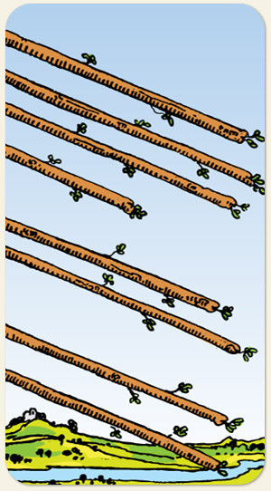

A velocidade, a comunicação rápida e a conclusão iminente. O momento em que a energia do elemento Fogo atinge seu fluxo máximo, indicando que os obstáculos foram removidos e os eventos se desenrolam sem resistência. O movimento livre, as notícias inesperadas as viagens, o dinamismo, a clareza de objetivos e a sensação de que as coisas finalmente estão acontecendo.
Aceleração: produtividade mais energia. Hoje, esses bastões sendo arremessados poderiam ser representados por foguetes. Para grandes saltos é preciso grande impulso. Bravura, vontade.
Positivo: Caminhos abertos e possibilidades, a luz no fim do túnel, o Oeste com o sol se pondo. Ser guiado, mesmo diante de uma noite escura. Uma rotina acelerada, motivante e que não gera cansaço. Energia e ímpeto para solucionar problemas, capacidade de chegar em destinos distantes.
Negativo: Acelerar sem rumo, um tiro de canhão para atingir uma formiga, desperdício de energia, violência, velocidade sem cautela, ir com muita sede ao pote, ser afoito, passar por cima dos outros e sem critério algum, não saber lidar com a própria energia.
Símbolos: Bastão em Diagonal, Céu Límpido, Rio, Castelo.
Cores: Azul, Verde.